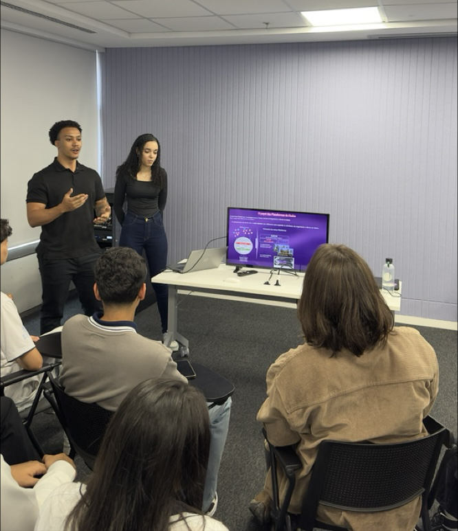

Analítico
Análise de problemas e requisitos para construção de soluções.
Construo pipelines e plataformas confiáveis com foco em automação, observabilidade e governança. Tecnologias: Python, PySpark, Databricks, SQL e infraestrutura em nuvem.
Construo e opero pipelines e plataformas de dados com foco em confiabilidade, automação e governança.
Trabalho no ciclo completo de soluções de dados: levantamento de requisitos, modelagem de pipelines ETL/ELT, implementação em Python/PySpark e integração com infraestrutura em nuvem. Minha abordagem prioriza observabilidade, testes e automação para reduzir trabalho manual e aumentar a escalabilidade.
Análise de problemas e requisitos para construção de soluções.
Busca constante por melhorias e modernização dos processos.
Trabalho em equipe e comunicação com diferentes stakeholders.
Foco em eficiência, escalabilidade e geração de valor para o negócio.
Trajetória orientada à engenharia de software aplicada ao ecossistema de dados: formação técnica, projetos acadêmicos e experiência em ambientes corporativos.
Ensino integrado técnico em Desenvolvimento de Sistemas (P-TECH). • Principais disciplinas: Programação em Java, Desenvolvimento Web, Banco de Dados, Mobile Development e Análise de Sistemas. • Parcerias corporativas (P-TECH): Participação em mentorias, desafios e projetos reais com empresas como Volkswagen do Brasil e IBM, fortalecendo habilidades técnicas e comportamentais alinhadas ao mercado. • Projeto Final (TCC): Desenvolvimento de um aplicativo para auxiliar na gestão de vans escolares. As principais funcionalidades do aplicativo incluem notificar os pais (os responsáveis das crianças) sobre o status dos passageiros via SMS, gerar rotas automáticas para o motorista, controlar os alunos presentes e ausentes e centralizar as informações relacionadas às vans.
Curso de graduação em Sistemas de Informação com foco prático e alinhado ao mercado de tecnologia. A SPTech adota um modelo de ensino que integra estudo e trabalho, trazendo desafios reais para o ambiente acadêmico e promovendo o desenvolvimento técnico e comportamental dos alunos. Ao longo do curso, tenho contato com tecnologias amplamente utilizadas no mercado, atuando em áreas como desenvolvimento de software, engenharia e modelagem de dados, bancos de dados, cloud e Big Data, arquitetura de sistemas, metodologias ágeis, além de segurança da informação e boas práticas. A formação é fortemente baseada em projetos semestrais estruturados com metodologias ágeis, incluindo sprints e entregas de MVPs, permitindo vivenciar na prática o funcionamento de times de tecnologia. Trabalhamos com cases de problemas reais, desenvolvendo soluções próximas ao contexto das empresas, o que fortalece o aprendizado, a autonomia, o trabalho em equipe e a preparação para o mercado profissional.
Direcionamento para especialização em Engenharia de Dados: Especialização em modelagem dimensional, arquiteturas Lakehouse (Databricks), e pipeline ETL/ELT com Python/PySpark. Interesse em orquestração, observabilidade e certificações relevantes na nuvem.
Atuação em projetos de Engenharia de Dados envolvendo sustentação e evolução de pipelines de dados, análise de impactos, documentação técnica e migração de processos analíticos. Participação em projetos corporativos como adequação ao CNPJ Alfanumérico e migração de fluxos Alteryx para Databricks, utilizando Databricks, Spark, SQL, Hive, Hadoop, Git e Azure DevOps. Experiência em validação de dados, automação de análises e suporte a iniciativas de transformação digital.
Objetivo: atuar como Engenheiro de Dados Junior, entregando pipelines confiáveis, automação de processos e integração contínua entre desenvolvimento e infraestrutura.
Case de entrega completa para cliente real: desenvolvimento em ciclo ágil, com foco em solução prática e apresentação para stakeholders.
Experiências envolvendo Engenharia de Dados, modernização tecnológica, DevOps, automação e governança.
Modernização de workflows analíticos para reduzir custos de licenciamento e alinhar processamento a uma plataforma distribuída (Databricks/Spark).
Preparação de sistemas, pipelines e integrações para suportar o formato alfanumérico do identificador, com validações e mitigação de riscos em integrações legadas.
Padronização de repositórios, pipelines CI/CD e automação de entrega para reduzir trabalho manual e aumentar rastreabilidade.
Conduzi uma apresentação sobre aplicações práticas de dados para estudantes em evento institucional. A atividade combinou exposição conceitual e demonstração de casos de uso, com foco em aproximar teoria e prática.
Essas iniciativas reforçam minha atuação além da entrega técnica: comunicação com público, preparação de material e demonstração de soluções de dados.

Participação em projeto com ciclo completo: análise, implementação e entrega para cliente real.
Atuação em iniciativas de modernização tecnológica envolvendo dados e automação.
Colaboração em construção e evolução de pipelines e processos de dados.
Atividades de apresentação e capacitação que apoiam a adoção de práticas e tecnologias.
Procuro oportunidades para atuar em engenharia de dados, automação e infraestrutura de dados, contribuindo na construção de pipelines confiáveis, automação de operações e governança de dados.